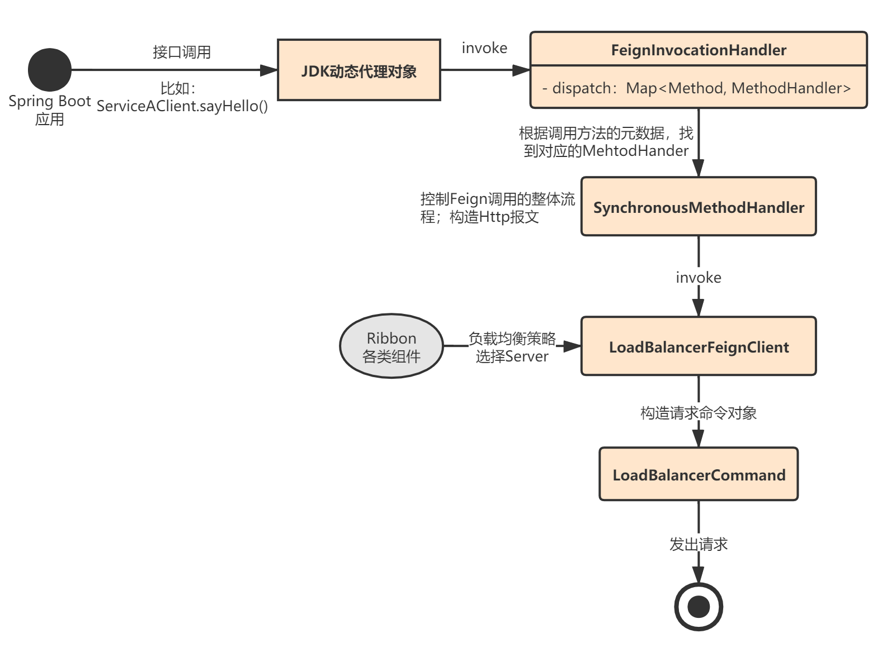

了解了Feign是如何创建动态代理对象之后，我们就进入最后一个环节：Feign的请求流程。我们在使用Feign时，一般使用@Autowired注入，比如下面这样：
@FeignClient("ServiceA") // ServiceA就是服务A的名称
public interface ServiceAClient extends ServiceAInterface {
}
@RestController
@RequestMapping("/ServiceB/user")
public class ServiceBController {
@Autowired
private ServiceAClient serviceA;
@RequestMapping(value = "/sayHello/{id}", method = RequestMethod.GET)
public String greeting(@PathVariable("id") Long id,@RequestParam("name") String name,
@RequestParam("age") Integer age) {
return serviceA.sayHello(id, name, age);
}
}
上面的代码，最终调用了ServiceAClient.sayHello()，那是如何触发代理对象的方法的执行的呢？
通过上一章的讲解，我们已经知道，Spring为我们注入的是ServiceAClient接口的代理对象，这个对象是通过JDK动态代理方式生成的：
InvocationHandler handler = factory.create(target, methodToHandler);
T proxy = (T) Proxy.newProxyInstance(target.type().getClassLoader(), new Class<?>[] {target.type()}, handler);
这里我补充下JDK动态代理的知识，代理的横切逻辑就是InvocationHandler的实现类：
public interface InvocationHandler {
/**
* @param proxy 代理对象，也就是最终实现了例如ServiceAClient接口的某个代理对象
* @param method 接口的方法元数据
* @param args 方法参数
*/
public Object invoke(Object proxy, Method method, Object[] args)throws Throwable;
}
要使用JDK动态代理，我们需要实现上面这个接口，比如Feign中的实现是FeignInvocationHandler，它将接口的方法元数据和处理逻辑保存到一个dispatch属性中：
static class FeignInvocationHandler implements InvocationHandler {
private final Target target;
private final Map<Method, MethodHandler> dispatch;
FeignInvocationHandler(Target target, Map<Method, MethodHandler> dispatch) {
this.target = checkNotNull(target, "target");
this.dispatch = checkNotNull(dispatch, "dispatch for %s", target);
}
@Override
public Object invoke(Object proxy, Method method, Object[] args) throws Throwable {
if ("equals".equals(method.getName())) {
try {
Object otherHandler =
args.length > 0 && args[0] != null ? Proxy.getInvocationHandler(args[0]) : null;
return equals(otherHandler);
} catch (IllegalArgumentException e) {
return false;
}
} else if ("hashCode".equals(method.getName())) {
return hashCode();
} else if ("toString".equals(method.getName())) {
return toString();
}
// 根据方法元数据，找到对应的MethodHandler
return dispatch.get(method).invoke(args);
}
}
然后使用JDK的Proxy.newProxyInstance()创建代理对象：
// Proxy.java
public static Object newProxyInstance(ClassLoader loader,Class<?>[] interfaces,InvocationHandler h) throws IllegalArgumentException
{
Objects.requireNonNull(h);
final Class<?>[] intfs = interfaces.clone();
final SecurityManager sm = System.getSecurityManager();
if (sm != null) {
checkProxyAccess(Reflection.getCallerClass(), loader, intfs);
}
/*
* Look up or generate the designated proxy class.
*/
Class<?> cl = getProxyClass0(loader, intfs);
/*
* Invoke its constructor with the designated invocation handler.
*/
try {
if (sm != null) {
checkNewProxyPermission(Reflection.getCallerClass(), cl);
}
final Constructor<?> cons = cl.getConstructor(constructorParams);
final InvocationHandler ih = h;
if (!Modifier.isPublic(cl.getModifiers())) {
AccessController.doPrivileged(new PrivilegedAction<Void>() {
public Void run() {
cons.setAccessible(true);
return null;
}
});
}
return cons.newInstance(new Object[]{h});
} catch (IllegalAccessException|InstantiationException e) {
throw new InternalError(e.toString(), e);
} catch (InvocationTargetException e) {
Throwable t = e.getCause();
if (t instanceof RuntimeException) {
throw (RuntimeException) t;
} else {
throw new InternalError(t.toString(), t);
}
} catch (NoSuchMethodException e) {
throw new InternalError(e.toString(), e);
}
}
当我们调用代理对象的任何方法时，都会触发InvocationHandler.invoke()的执行。
了解JDK动态代理，我们来看下Feign的整个请求调用流程，我用下面这张图表述：

比如，我调用了ServiceAClient.sayHello()，则会触发FeignInvocationHandler.invoke()的执行：
// FeignInvocationHandler.java
private final Map<Method, MethodHandler> dispatch;
public Object invoke(Object proxy, Method method, Object[] args) throws Throwable {
if ("equals".equals(method.getName())) {
try {
Object otherHandler =
args.length > 0 && args[0] != null ? Proxy.getInvocationHandler(args[0]) : null;
return equals(otherHandler);
} catch (IllegalArgumentException e) {
return false;
}
} else if ("hashCode".equals(method.getName())) {
return hashCode();
} else if ("toString".equals(method.getName())) {
return toString();
}
return dispatch.get(method).invoke(args);
}
最终由内部的dispatch这个Map，根据方法元数据，找到对应的MethodHandler.invoke()进行处理，而MethodHandler的实现类就是SynchronousMethodHandler。
SynchronousMethodHandler内部封装了Feign的各种组件，它控制了整个Feign的请求调用流程：
ServiceAClient.sayHello()，最终解析出来的URL是：GET http://ServiceA/sayHello/25 HTTP/1.1之类的形式；// SynchronousMethodHandler.java
final class SynchronousMethodHandler implements MethodHandler {
private static final long MAX_RESPONSE_BUFFER_SIZE = 8192L;
private final MethodMetadata metadata;
private final Target<?> target;
private final Client client;
private final Retryer retryer;
private final List<RequestInterceptor> requestInterceptors;
private final Logger logger;
private final Logger.Level logLevel;
private final RequestTemplate.Factory buildTemplateFromArgs;
private final Options options;
private final ExceptionPropagationPolicy propagationPolicy;
private final Decoder decoder;
private final AsyncResponseHandler asyncResponseHandler;
@Override
public Object invoke(Object[] argv) throws Throwable {
// 构造请求模板工具类
RequestTemplate template = buildTemplateFromArgs.create(argv);
Options options = findOptions(argv);
// Regtry组件，默认为Retryer.NEVER_RETRY
Retryer retryer = this.retryer.clone();
while (true) {
try {
// 核心：调用这个方法进行处理
return executeAndDecode(template, options);
} catch (RetryableException e) {
try {
retryer.continueOrPropagate(e);
} catch (RetryableException th) {
Throwable cause = th.getCause();
if (propagationPolicy == UNWRAP && cause != null) {
throw cause;
} else {
throw th;
}
}
if (logLevel != Logger.Level.NONE) {
logger.logRetry(metadata.configKey(), logLevel);
}
continue;
}
}
}
Object executeAndDecode(RequestTemplate template, Options options) throws Throwable {
// 1.创建一个请求类，内部会用拦截器对请求URL做各种处理
// 最终URL为：GET http://ServiceA/sayHello HTTP/1.1之类的形式
Request request = targetRequest(template);
// 2.记录日志
if (logLevel != Logger.Level.NONE) {
logger.logRequest(metadata.configKey(), logLevel, request);
}
Response response;
long start = System.nanoTime();
try {
// 3.发送请求，client默认为LoadBalancerFeignClient
response = client.execute(request, options);
// 4.解析请求结果
response = response.toBuilder()
.request(request)
.requestTemplate(template)
.build();
} catch (IOException e) {
if (logLevel != Logger.Level.NONE) {
logger.logIOException(metadata.configKey(), logLevel, e, elapsedTime(start));
}
throw errorExecuting(request, e);
}
long elapsedTime = TimeUnit.NANOSECONDS.toMillis(System.nanoTime() - start);
// 5.解码
if (decoder != null)
return decoder.decode(response, metadata.returnType());
// 6.异步响应处理
CompletableFuture<Object> resultFuture = new CompletableFuture<>();
asyncResponseHandler.handleResponse(resultFuture, metadata.configKey(), response,
metadata.returnType(),
elapsedTime);
try {
if (!resultFuture.isDone())
throw new IllegalStateException("Response handling not done");
return resultFuture.join();
} catch (CompletionException e) {
Throwable cause = e.getCause();
if (cause != null)
throw cause;
throw e;
}
}
long elapsedTime(long start) {
return TimeUnit.NANOSECONDS.toMillis(System.nanoTime() - start);
}
Request targetRequest(RequestTemplate template) {
for (RequestInterceptor interceptor : requestInterceptors) {
interceptor.apply(template);
}
return target.apply(template);
}
Options findOptions(Object[] argv) {
if (argv == null || argv.length == 0) {
return this.options;
}
return Stream.of(argv)
.filter(Options.class::isInstance)
.map(Options.class::cast)
.findFirst()
.orElse(this.options);
}
}
我们关键看下LoadBalancerFeignClient是如何处理请求的，它的思路如下：
// LoadBalancerFeignClient.java
private CachingSpringLoadBalancerFactory lbClientFactory;
public Response execute(Request request, Request.Options options) throws IOException {
try {
// asUri：http://ServiceA/sayHello/25
URI asUri = URI.create(request.url());
// clientName就是服务名称，比如ServiceA
String clientName = asUri.getHost();
// uriWithoutHost：http:///sayHello/25
URI uriWithoutHost = cleanUrl(request.url(), clientName);
// 构造一个RibbonRequest请求类
FeignLoadBalancer.RibbonRequest请求类 ribbonRequest = new FeignLoadBalancer.RibbonRequest(
this.delegate, request, uriWithoutHost);
// 获取Client配置
IClientConfig requestConfig = getClientConfig(options, clientName);
// 关键：构造FeignLoadBalancer，执行请求
return lbClient(clientName).executeWithLoadBalancer(ribbonRequest, requestConfig).toResponse();
}
catch (ClientException e) {
IOException io = findIOException(e);
if (io != null) {
throw io;
}
throw new RuntimeException(e);
}
}
private FeignLoadBalancer lbClient(String clientName) {
return this.lbClientFactory.create(clientName);
}
上述的lbClient(clientName)就是创建了一个基于Ribbon的LoadBalancer：
// CachingSpringLoadBalancerFactory.java
public FeignLoadBalancer create(String clientName) {
// 先看看缓存中有没有
FeignLoadBalancer client = this.cache.get(clientName);
if (client != null) {
return client;
}
// Ribbon组件
IClientConfig config = this.factory.getClientConfig(clientName);
ILoadBalancer lb = this.factory.getLoadBalancer(clientName);
ServerIntrospector serverIntrospector = this.factory.getInstance(clientName,
ServerIntrospector.class);
// 将Ribbon的LoadBalancer包装成FeignLoadBalancer
client = this.loadBalancedRetryFactory != null
? new RetryableFeignLoadBalancer(lb, config, serverIntrospector,
this.loadBalancedRetryFactory)
: new FeignLoadBalancer(lb, config, serverIntrospector);
this.cache.put(clientName, client);
return client;
}
FeignLoadBalancer仅仅是对Ribbon的LoadBalancer做了一层很简单的封装。
我们来看下FeignLoadBalancer.executeWithLoadBalancer()，这是执行请求的地方。实际上就是创建了一个LoadBalancerCommand对象，然后提交了一个任务：
public T executeWithLoadBalancer(final S request, final IClientConfig requestConfig) throws ClientException {
// 1.创建一个LoadBalancerCommand
LoadBalancerCommand<T> command = buildLoadBalancerCommand(request, requestConfig);
try {
return command.submit(
new ServerOperation<T>() {
@Override
public Observable<T> call(Server server) {
// 这里传进来一个Server，是基于Ribbon的负载均衡策略选出来的
URI finalUri = reconstructURIWithServer(server, request.getUri());
S requestForServer = (S) request.replaceUri(finalUri);
try {
// 这里使用了RXJava
return Observable.just(AbstractLoadBalancerAwareClient.this.execute(requestForServer, requestConfig));
}
catch (Exception e) {
return Observable.error(e);
}
}
})
.toBlocking()
.single();
} catch (Exception e) {
Throwable t = e.getCause();
if (t instanceof ClientException) {
throw (ClientException) t;
} else {
throw new ClientException(e);
}
}
}
我们重点关注LoadBalancerCommand.submit()，里面有一大坨代码， 用了RXJava的各种技术，忽略各种细节，关注selectServer()这个方法即可：
// LoadBalancerCommand.java
public Observable<T> submit(final ServerOperation<T> operation) {
final ExecutionInfoContext context = new ExecutionInfoContext();
if (listenerInvoker != null) {
try {
listenerInvoker.onExecutionStart();
} catch (AbortExecutionException e) {
return Observable.error(e);
}
}
final int maxRetrysSame = retryHandler.getMaxRetriesOnSameServer();
final int maxRetrysNext = retryHandler.getMaxRetriesOnNextServer();
// 这里基于Ribbon的负载均衡策略选择一个Server
Observable<T> o = (server == null ? selectServer() : Observable.just(server))
.concatMap(new Func1<Server, Observable<T>>() {
@Override
// Called for each server being selected
public Observable<T> call(Server server) {
context.setServer(server);
final ServerStats stats = loadBalancerContext.getServerStats(server);
// Called for each attempt and retry
Observable<T> o = Observable
.just(server)
.concatMap(new Func1<Server, Observable<T>>() {
@Override
public Observable<T> call(final Server server) {
context.incAttemptCount();
loadBalancerContext.noteOpenConnection(stats);
if (listenerInvoker != null) {
try {
listenerInvoker.onStartWithServer(context.toExecutionInfo());
} catch (AbortExecutionException e) {
return Observable.error(e);
}
}
final Stopwatch tracer = loadBalancerContext.getExecuteTracer().start();
return operation.call(server).doOnEach(new Observer<T>() {
private T entity;
@Override
public void onCompleted() {
recordStats(tracer, stats, entity, null);
// TODO: What to do if onNext or onError are never called?
}
@Override
public void onError(Throwable e) {
recordStats(tracer, stats, null, e);
logger.debug("Got error {} when executed on server {}", e, server);
if (listenerInvoker != null) {
listenerInvoker.onExceptionWithServer(e, context.toExecutionInfo());
}
}
@Override
public void onNext(T entity) {
this.entity = entity;
if (listenerInvoker != null) {
listenerInvoker.onExecutionSuccess(entity, context.toExecutionInfo());
}
}
private void recordStats(Stopwatch tracer, ServerStats stats, Object entity, Throwable exception) {
tracer.stop();
loadBalancerContext.noteRequestCompletion(stats, entity, exception, tracer.getDuration(TimeUnit.MILLISECONDS), retryHandler);
}
});
}
});
if (maxRetrysSame > 0)
o = o.retry(retryPolicy(maxRetrysSame, true));
return o;
}
});
if (maxRetrysNext > 0 && server == null)
o = o.retry(retryPolicy(maxRetrysNext, false));
return o.onErrorResumeNext(new Func1<Throwable, Observable<T>>() {
@Override
public Observable<T> call(Throwable e) {
if (context.getAttemptCount() > 0) {
if (maxRetrysNext > 0 && context.getServerAttemptCount() == (maxRetrysNext + 1)) {
e = new ClientException(ClientException.ErrorType.NUMBEROF_RETRIES_NEXTSERVER_EXCEEDED,
"Number of retries on next server exceeded max " + maxRetrysNext
+ " retries, while making a call for: " + context.getServer(), e);
}
else if (maxRetrysSame > 0 && context.getAttemptCount() == (maxRetrysSame + 1)) {
e = new ClientException(ClientException.ErrorType.NUMBEROF_RETRIES_EXEEDED,
"Number of retries exceeded max " + maxRetrysSame
+ " retries, while making a call for: " + context.getServer(), e);
}
}
if (listenerInvoker != null) {
listenerInvoker.onExecutionFailed(e, context.toFinalExecutionInfo());
}
return Observable.error(e);
}
});
}
其实就是利用了Ribbon的组件——LoadBalancerContext，最终基于负载均衡策略返回一个可用的Server：
// LoadBalancerCommand.java
private Observable<Server> selectServer() {
return Observable.create(new OnSubscribe<Server>() {
@Override
public void call(Subscriber<? super Server> next) {
try {
// 这里用了Ribbon的组件选择Server
Server server = loadBalancerContext
.getServerFromLoadBalancer(loadBalancerURI, loadBalancerKey);
next.onNext(server);
next.onCompleted();
} catch (Exception e) {
next.onError(e);
}
}
});
}
关于Ribbon的源码讲解，我在Ribbon系列中已经详细讲解过了，这里不再赘述。
本章，我讲解了Feign的请求调用的整体流程，核心就是基于JDK动态代理，通过SynchronousMethodHandler拦截方法调用，然后构造请求报文，最后基于底层组装的Ribbon核心组件，从应用实例列表中选择一个Server，发起调用。